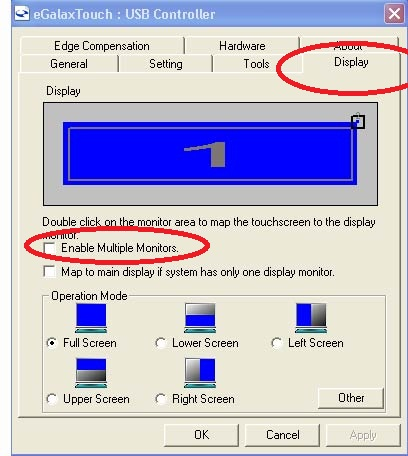

回問題列表 第二螢幕無法觸控？ Q30 硬體問題 anonymous Jul 8, 2014 不好意事~請問一下~我的觸控螢幕 延伸桌面~怎麼不能觸控??可有解決辦法嗎? 1 個回答 回答 #31 advpos Jul 8, 2014 您好 觸控螢幕都會附上一片驅動光碟 請安裝光碟中的驅動程式 並將觸控範圍改成 2 下圖是 eGalaxTouch 晶片的驅動為例  觸控控制晶片不同廠牌 畫面有可能不同 但是設定方式都類似 請參考
回答 #31 advpos Jul 8, 2014 您好 觸控螢幕都會附上一片驅動光碟 請安裝光碟中的驅動程式 並將觸控範圍改成 2 下圖是 eGalaxTouch 晶片的驅動為例  觸控控制晶片不同廠牌 畫面有可能不同 但是設定方式都類似 請參考